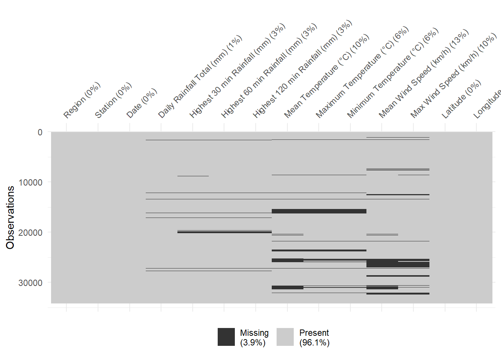

This document describes the data preparation process for combining and enriching historical weather data for Singapore from 2020 to 2024.
1. Download Historical Weather Data
Downloaded the daily weather data for each year from the Meteorological Service Singapore website. Only active full aws stations were considered. While we were downloading the datasets, Marina Barrage, Semakau Island and Tengah stations were observed to contain a significant amount of missing data (2 years worth of missing data). Therefore, these stations were omitted. The downloaded CSV files were placed into a single folder.
2. Combine All CSV Files into One Dataset
We used the data.table package to read and combine multiple CSV files stored in one directory.
library(data.table)file_list <-list.files(pattern ="\\.csv$")# Read and combine all CSVsweather_data <-rbindlist(lapply(file_list, fread), fill =TRUE)
3. Convert Year, Month, Day to a Single Date Column
Since each CSV file includes columns for Year, Month, and Day:
# Combine year, month, and day into a proper dateweather_data[, Date :=as.Date(paste(Year, Month, Day, sep ="-"))]# Remove the original columnsweather_data[, c("Year", "Month", "Day") :=NULL]
4. Add Region Column
We map the region using a predefined vector based on the station name.
region_map <-c("Admiralty"="North", "Ang Mo Kio"="Northeast","Changi"="East","Choa Chu Kang (South)"="West","Clementi"="West","East Coast Parkway"="East","Jurong (West)"="West","Jurong Island"="West","Newton"="Central","Pasir Panjang"="Central","Paya Lebar"="Central","Pulau Ubin"="Northeast","Seletar"="North","Sembawang"="North","Sentosa Island"="Central","Tai Seng"="Northeast","Tuas South"="West")weather_data[, Region := region_map[Station]]
5. Add Latitude and Longitude
We join latitude and longitude coordinates using a reference table.
Group by station alphabetically and sort dates chronologically within each station.
# Sort datasetorder(weather_data, Station, Date)
7. Convert column data type
Convert data types such that ‘Region’ and ‘Station’ remain as character, ‘Date’ becomes a proper date type and all other columns become numeric.
weather_data_updated <- weather_data %>%mutate(Date =dmy(Date), # Convert Date column to Date format (from d/m/yyyy)across(.cols =-c(Region, Station, Date), # Select all except these columns.fns =~as.numeric(.) ) )
8. Export datasets as CSV and RDS
# Export as CSVwrite.csv(weather_data_updated, "weather_data_updated.csv", row.names =FALSE)# Export as RDSsaveRDS(weather_data_updated, "weather_data_updated.rds")
9. Check for Duplicates and Missing Values
Ensure data integrity by checking for duplicates and missing values.
Rows: 30532 Columns: 14
── Column specification ────────────────────────────────────────────────────────
Delimiter: ","
chr (2): Region, Station
dbl (11): Daily Rainfall Total (mm), Highest 30 min Rainfall (mm), Highest ...
date (1): Date
ℹ Use `spec()` to retrieve the full column specification for this data.
ℹ Specify the column types or set `show_col_types = FALSE` to quiet this message.
# A tibble: 0 × 14
# ℹ 14 variables: Region <chr>, Station <chr>, Date <date>,
# Daily Rainfall Total (mm) <dbl>, Highest 30 min Rainfall (mm) <dbl>,
# Highest 60 min Rainfall (mm) <dbl>, Highest 120 min Rainfall (mm) <dbl>,
# Mean Temperature (°C) <dbl>, Maximum Temperature (°C) <dbl>,
# Minimum Temperature (°C) <dbl>, Mean Wind Speed (km/h) <dbl>,
# Max Wind Speed (km/h) <dbl>, Latitude <dbl>, Longitude <dbl>
vis_miss(weather_data_updated)

10. Remove unused columns
We remove the columns that we will not used: Highest 30 min Rainfall (mm), Highest 60 min Rainfall (mm), Highest 120 min Rainfall (mm), Mean Wind Speed (km/h) and Max Wind Speed (km/h).
weather_data_updated <- weather_data_updated[, !(names(weather_data_updated) %in%c("Highest 30 min Rainfall (mm)","Highest 60 min Rainfall (mm)","Highest 120 min Rainfall (mm)","Mean Wind Speed (km/h)","Max Wind Speed (km/h)"))]
11. Impute missing values
This code fills in missing weather data using a 7-day moving average, doing so separately for each weather station.
weather_variables <-c("Daily Rainfall Total (mm)", "Mean Temperature (°C)", "Maximum Temperature (°C)", "Minimum Temperature (°C)")weather_data_cleaned <- weather_data_updatedfor(variable in weather_variables) { weather_data_cleaned[[variable]] <-as.numeric(as.character(weather_data_cleaned[[variable]])) weather_data_cleaned <- weather_data_cleaned %>%group_by(Station) %>%arrange(Station, Date) %>%mutate("{variable}":=round(na_ma(.data[[variable]], k =7, weighting ="simple"), 1)) %>%ungroup()}